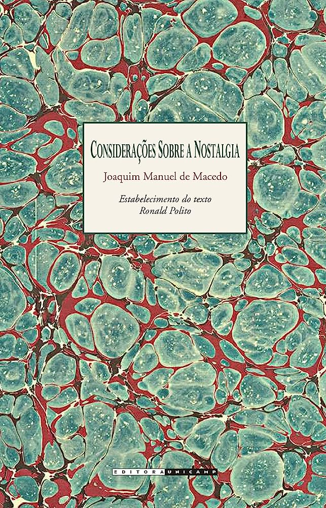
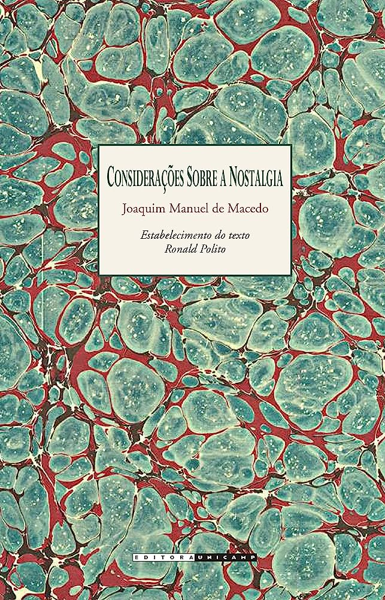
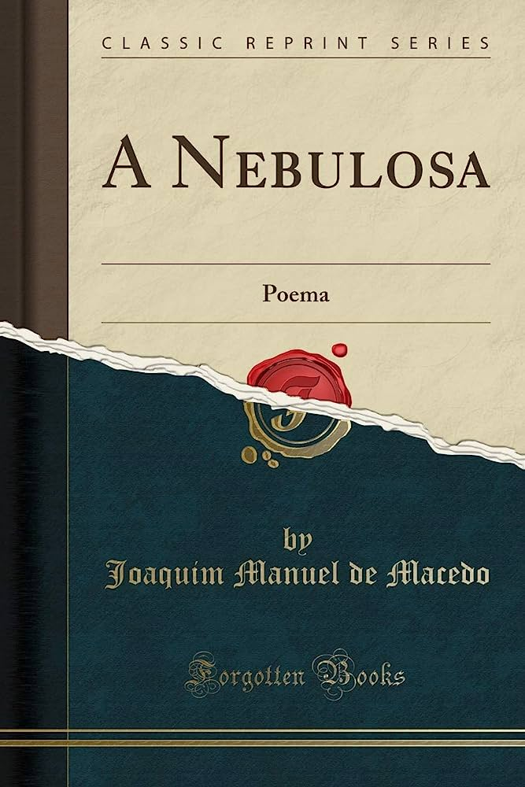
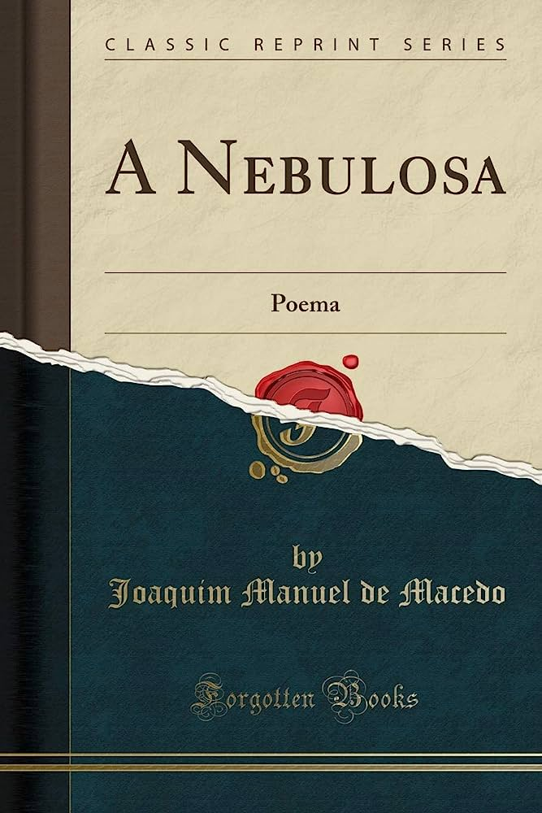
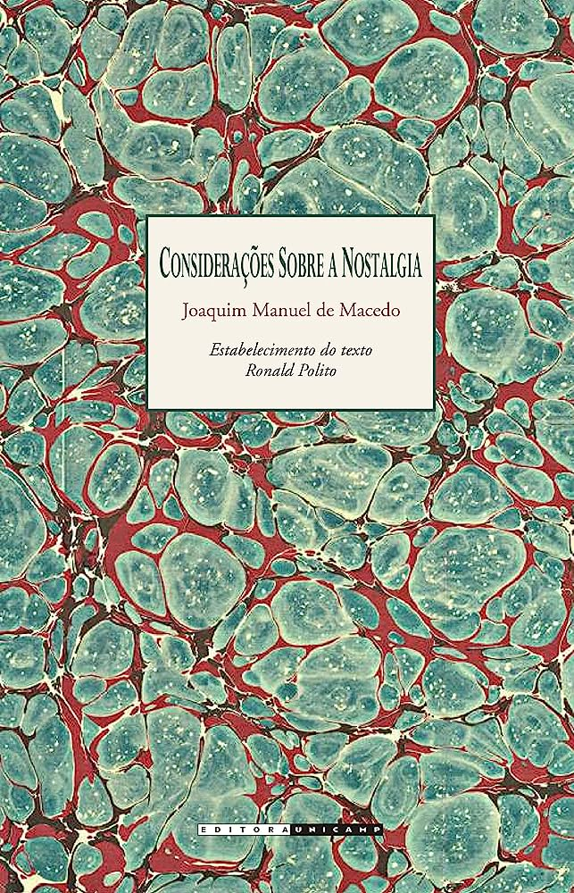
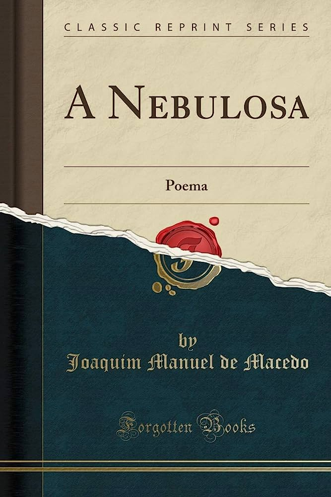

 



O romance relata a vida de quatro estudantes de medicina durante um final de semana. No feriado de Sant'Ana um grupo de amigos estudantes de medicina vão para ilha de Paquetá, no Rio de Janeiro. Augusto, Leopoldo, Fabrício e Filipe vão passar o feriado na casa da avó de Filipe.
Simplício é um jovem rapaz com problemas de visão e, por isso, dependente da família. Criado pela tia Domingas, ele tem como companhia apenas o irmão mais velho, Américo, e a prima, Anica. Certo dia, encontra um misterioso homem que lhe promete a cura para a cegueira: uma luneta mágica!
Honorina, uma jovem e bela dama, sempre cercada de ilustres admiradores – e por isso alvo de inveja das moças da Corte –, começa a ser cortejada por um homem misterioso, conhecido apenas pela alcunha de "O Moço Loiro".

